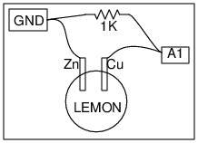

Schematic

- Voltaic cells are based on electrochemical reaction. The reaction typically occurs
between two pieces of metal, called electrodes, and a liquid or paste, called an electrolyte.
- Many fruits and liquids can be used for the acidic electrolyte.
- Copper and Zinc plates are used as electrodes.
Instructions
- Make a lomon cell and connect as shown in the figure, measure the voltage at A1.
- Connect the 1K resistor and measure the voltage again. The voltage drops because
of the internal resistance of the cell.
- Try repeating this with a 1.5 volts dry cell.